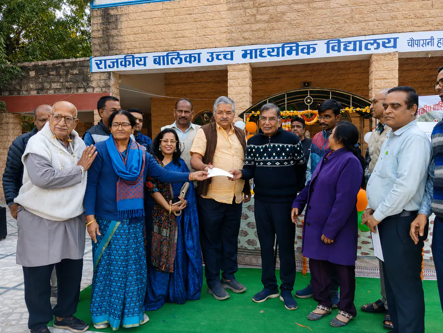

माँ शारदामणि ट्रस्ट
बालिकाओं की उच्च शिक्षा को संस्कार, विवेक और आत्मविश्वास से जोड़ने वाली मणिद्वीप की निःस्वार्थ सेवा-धारा।
- स्थापना: 28 मार्च 2001
- 3,400+ छात्राएँ
- ₹1.64 करोड़+ छात्रवृत्ति

विद्यालय से उच्च शिक्षा तक
स्वामी विवेकानन्द स्टूडेन्ट्स वेलफेयर चैरिटेबल ट्रस्ट की स्थापना के बाद भैया श्री नन्दकिशोर जी शारदा एवं माँ बसन्ती जी ने अनुभव किया कि छात्राओं के सर्वांगीण विकास और उज्ज्वल भविष्य के लिए केवल विद्यालय स्तर की शिक्षा पर्याप्त नहीं है।
बालिकाओं को उच्च शिक्षा के अवसरों के साथ ऐसे संस्कार और जीवन-मूल्य भी मिलना आवश्यक है, जो उन्हें आत्मविश्वासी, विवेकशील, आत्मनिर्भर और जिम्मेदार नागरिक बनाएँ। इसी दूरदृष्टि से 28 मार्च 2001 को माँ शारदामणि ट्रस्ट की स्थापना हुई।
छात्रवृत्ति से आगे, जीवन-निर्माण तक
ट्रस्ट का उद्देश्य सामान्यतया विद्यालय स्तर से चयनित छात्राओं को उच्च शिक्षा के लिए छात्रवृत्ति तथा विश्वविद्यालय स्तर की निःशुल्क पाठ्य-पुस्तकों की सुविधा उपलब्ध कराना था, ताकि आर्थिक अभाव उनकी शिक्षा की राह में बाधा न बने।
यह पहल केवल डिग्री प्राप्त करवाने तक सीमित नहीं रही। भैया जी और माँ बसन्ती जी का मानना था कि शिक्षा तभी पूर्ण है, जब वह ज्ञान के साथ संस्कार और विवेक भी प्रदान करे। इसी भावना से छात्राओं के लिए संस्कार कक्षाओं की व्यवस्था की गई।
से निरंतर उच्च शिक्षा सहयोग की सेवा।
छात्राओं को शिक्षा के अवसरों से जोड़ा गया।
मार्च 2026 तक छात्रवृत्ति सहयोग।

वर्षों में बढ़ती सेवा-धारा
2001 से 2026 तक उच्च शिक्षा सहयोग की संचयी यात्रा, छात्राओं की संख्या और छात्रवृत्ति राशि दोनों रूपों में निरंतर विस्तार दिखाती है।
छात्रवृत्ति राशि
संचयी राशि, लाखों मेंछात्रवृत्ति राशि का विस्तार बताता है कि सेवा केवल निरंतर नहीं रही, बल्कि समय के साथ अधिक समर्थ भी हुई।
ज्ञान के साथ विवेक और उत्तरदायित्व
संस्कार कक्षाओं में भारतीय संस्कृति, नैतिक मूल्यों, अनुशासन, कर्तव्यबोध, सेवा, सदाचार, आध्यात्मिक चिंतन और सकारात्मक दृष्टिकोण पर मार्गदर्शन दिया जाता रहा।
आत्मविश्वास
छात्राओं में आत्मसम्मान, निर्णय-क्षमता और जीवन की चुनौतियों का धैर्यपूर्वक सामना करने की शक्ति बढ़ी।
संस्कार
बड़ों के प्रति सम्मान, परिवार के प्रति उत्तरदायित्व और समाज के प्रति संवेदनशीलता विकसित हुई।
आत्मनिर्भरता
उच्च शिक्षा के बाद अनेक छात्राएँ अपने पैरों पर खड़ी हुईं और परिवारों को आर्थिक-भावनात्मक संबल देने लगीं।
नारी सशक्तिकरण
ट्रस्ट ने शिक्षा को छात्रवृत्ति, छात्रवृत्ति को आत्मनिर्भरता और आत्मनिर्भरता को उत्तरदायित्व से जोड़ा।
सहयोग का प्रभाव पीढ़ियों तक
एक छात्रा को मिला अवसर केवल उसके व्यक्तिगत जीवन को नहीं, बल्कि परिवार और आने वाली पीढ़ियों को भी दिशा देता है।
उच्च शिक्षा की राह खुली
पी.एच.डी., सी.ए., इंजीनियरिंग, एम.बी.ए., एम.सी.ए., बी.एड. जैसी उच्च और व्यावसायिक शिक्षा के मार्ग प्रशस्त हुए।
अपने पैरों पर खड़ी छात्राएँ
शिक्षा पूर्ण कर अनेक छात्राएँ आर्थिक रूप से आत्मनिर्भर बनीं और अपने परिवारों को स्थिरता प्रदान करने लगीं।
परिवार और समाज में प्रकाश
कई छात्राएँ आज जागरूक माताएँ, जिम्मेदार परिवार-सदस्य और समाज-राष्ट्र निर्माण में योगदान देने वाली प्रेरक महिलाएँ हैं।

ज्ञानवान, संस्कारवान और उत्तरदायी नारी
माँ शारदामणि ट्रस्ट की सबसे बड़ी उपलब्धि यही है कि उसने शिक्षा को छात्रवृत्ति, छात्रवृत्ति को आत्मनिर्भरता और आत्मनिर्भरता को संस्कार एवं उत्तरदायित्व से जोड़ा है।
यहाँ उद्देश्य केवल एक छात्रा को पढ़ाना नहीं, बल्कि ऐसी महिला का निर्माण करना है जो ज्ञानवान होने के साथ संस्कारवान, आत्मविश्वासी होने के साथ विनम्र और आत्मनिर्भर होने के साथ परिवार एवं समाज के प्रति उत्तरदायी हो।
यही शिक्षा का वास्तविक उद्देश्य है और यही सच्चा नारी सशक्तिकरण है।
जहाँ शिक्षा अवसर बनती है, और अवसर जीवन-दृष्टि।
माँ शारदामणि ट्रस्ट भैया जी और माँ बसन्ती जी की उस भावना को आगे बढ़ाता है जिसमें शिक्षा, संस्कार और आत्मनिर्भरता मिलकर समाज के समग्र विकास का आधार बनते हैं।